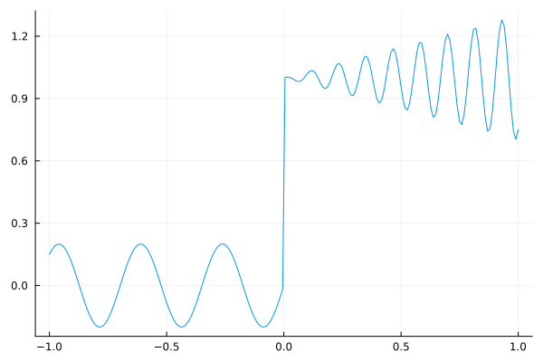
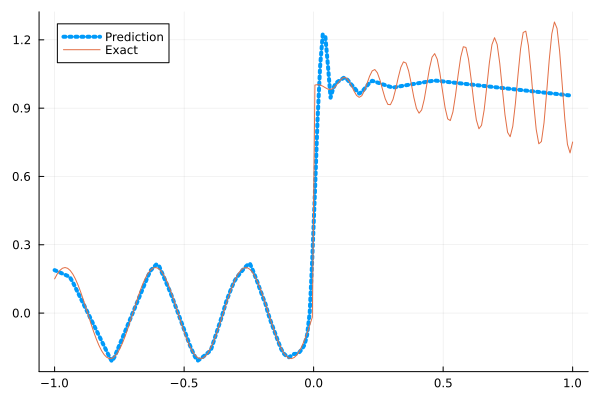
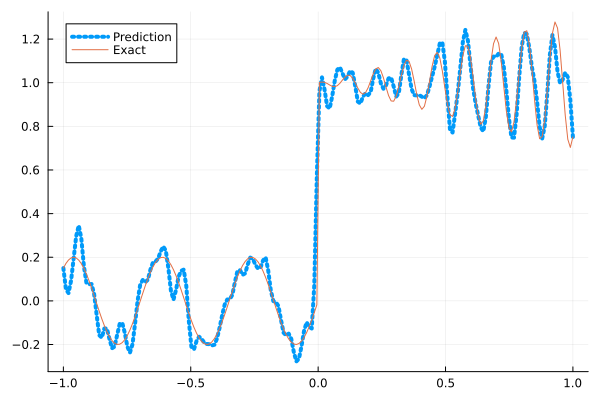
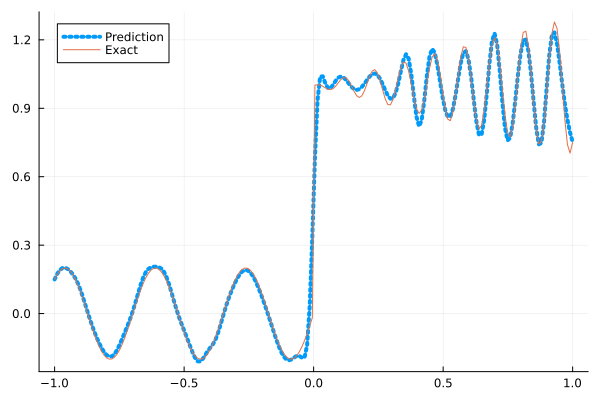
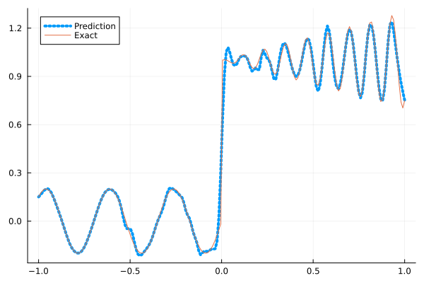
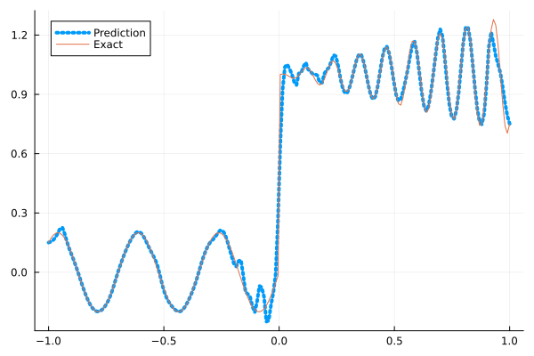

Fitting a nonlinear discontinuous function
This example is taken from here. However, we do not use adaptive activation functions. Instead, we show that using suitable non-parametric activation functions immediately performs better.
Consider the following discontinuous function with discontinuity at $x=0$:
\[u(x)= \begin{cases}0.2 \sin (18 x) & \text { if } x \leq 0 \\ 1+0.3 x \cos (54 x) & \text { otherwise }\end{cases}\]
The domain is $[-1,1]$. The number of training points used is 50.
Import pacakges
using Lux, Sophon
using NNlib, Optimisers, Plots, Random, StatsBase, ZygoteDataset
function u(x)
if x <= 0
return 0.2 * sin(18 * x)
else
return 1 + 0.3 * x * cos(54 * x)
end
end
function generate_data(n=50)
x = reshape(collect(range(-1.0f0, 1.0f0, n)), (1, n))
y = u.(x)
return (x, y)
endgenerate_data (generic function with 2 methods)Let's visualize the data.
x_train, y_train = generate_data(50)
x_test, y_test = generate_data(200)
Plots.plot(vec(x_test), vec(y_test),label=false)
Naive Neural Nets
First we demonstrate show naive fully connected neural nets could be really bad at fitting this function.
model = FullyConnected((1,50,50,50,50,1), relu)Chain(
layer_1 = Dense(1 => 50, relu), # 100 parameters
layer_2 = Dense(50 => 50, relu), # 2_550 parameters
layer_3 = Dense(50 => 50, relu), # 2_550 parameters
layer_4 = Dense(50 => 50, relu), # 2_550 parameters
layer_5 = Dense(50 => 1), # 51 parameters
) # Total: 7_801 parameters,
# plus 0 states, summarysize 80 bytes.Train the model
function train(model, x, y)
ps, st = Lux.setup(Random.default_rng(), model)
opt = Adam()
st_opt = Optimisers.setup(opt,ps)
function loss(model, ps, st, x, y)
y_pred, _ = model(x, ps, st)
mes = mean(abs2, y_pred .- y)
return mes
end
for i in 1:2000
gs = gradient(p->loss(model,p,st,x,y), ps)[1]
st_opt, ps = Optimisers.update(st_opt, ps, gs)
if i % 100 == 1 || i == 2000
println("Epoch $i || ", loss(model,ps,st,x,y))
end
end
return ps, st
endtrain (generic function with 1 method)Plot the result
@time ps, st = train(model, x_train, y_train)
y_pred = model(x_test,ps,st)[1]
Plots.plot(vec(x_test), vec(y_pred),label="Prediction",line = (:dot, 4))
Plots.plot!(vec(x_test), vec(y_test),label="Exact",legend=:topleft)Epoch 1 || 0.528639824595202
Epoch 101 || 0.016887476894212314
Epoch 201 || 0.015873746607996918
Epoch 301 || 0.015783612047293612
Epoch 401 || 0.01572586180720814
Epoch 501 || 0.01534750249740897
Epoch 601 || 0.014000672100966442
Epoch 701 || 0.013249462971277583
Epoch 801 || 0.013227716721626566
Epoch 901 || 0.013199210578609524
Epoch 1001 || 0.013181333592853162
Epoch 1101 || 0.01317231870502468
Epoch 1201 || 0.013164160282563198
Epoch 1301 || 0.013171211004878738
Epoch 1401 || 0.013093257141755838
Epoch 1501 || 0.012988621459991126
Epoch 1601 || 0.012825643899240924
Epoch 1701 || 0.012217660658645135
Epoch 1801 || 0.009868114407441054
Epoch 1901 || 0.007948492911954605
Epoch 2000 || 0.007533498187162663
13.092807 seconds (13.15 M allocations: 1.483 GiB, 4.21% gc time, 91.01% compilation time)
Siren
We use four hidden layers with 50 neurons in each.
model = Siren(1,50,50,50,50,1; omega = 30f0)Chain(
layer_1 = Dense(1 => 50, sin), # 100 parameters
layer_2 = Dense(50 => 50, sin), # 2_550 parameters
layer_3 = Dense(50 => 50, sin), # 2_550 parameters
layer_4 = Dense(50 => 50, sin), # 2_550 parameters
layer_5 = Dense(50 => 1), # 51 parameters
) # Total: 7_801 parameters,
# plus 0 states, summarysize 88 bytes.@time ps, st = train(model, x_train, y_train)
y_pred = model(x_test,ps,st)[1]
Plots.plot(vec(x_test), vec(y_pred),label="Prediction",line = (:dot, 4))
Plots.plot!(vec(x_test), vec(y_test),label="Exact",legend=:topleft)Epoch 1 || 0.7385935589625153
Epoch 101 || 0.0006247058046398912
Epoch 201 || 2.5281874959761413e-5
Epoch 301 || 9.029863376402414e-7
Epoch 401 || 2.883320974333331e-8
Epoch 501 || 5.801200334500293e-10
Epoch 601 || 8.342961305119804e-12
Epoch 701 || 4.4085268468616917e-13
Epoch 801 || 8.025871818855006e-14
Epoch 901 || 3.56412079769548e-14
Epoch 1001 || 2.3360923364124946e-14
Epoch 1101 || 2.707105468241643e-14
Epoch 1201 || 2.5704744822758357e-14
Epoch 1301 || 2.7317572392400905e-14
Epoch 1401 || 2.7290022638932127e-14
Epoch 1501 || 3.6720669601003065e-14
Epoch 1601 || 3.691469810203484e-14
Epoch 1701 || 3.6791756188704805e-14
Epoch 1801 || 3.388965333604388e-14
Epoch 1901 || 3.07527827119597e-14
Epoch 2000 || 3.3631393362608914e-14
6.812583 seconds (8.16 M allocations: 1.299 GiB, 4.61% gc time, 80.06% compilation time)
As we can see the model overfits the data, and the high frequencies cannot be optimized away. We need to tunning the hyperparameter omega
model = Siren(1,50,50,50,50,1; omega = 10f0)Chain(
layer_1 = Dense(1 => 50, sin), # 100 parameters
layer_2 = Dense(50 => 50, sin), # 2_550 parameters
layer_3 = Dense(50 => 50, sin), # 2_550 parameters
layer_4 = Dense(50 => 50, sin), # 2_550 parameters
layer_5 = Dense(50 => 1), # 51 parameters
) # Total: 7_801 parameters,
# plus 0 states, summarysize 88 bytes.@time ps, st = train(model, x_train, y_train)
y_pred = model(x_test,ps,st)[1]
Plots.plot(vec(x_test), vec(y_pred),label="Prediction",line = (:dot, 4))
Plots.plot!(vec(x_test), vec(y_test),label="Exact",legend=:topleft)Epoch 1 || 0.9295132491878055
Epoch 101 || 0.008270763073323617
Epoch 201 || 0.0064754198161563635
Epoch 301 || 0.005865343521554735
Epoch 401 || 0.005425414811034274
Epoch 501 || 0.0048995019225522825
Epoch 601 || 0.004096466110886463
Epoch 701 || 0.0028515636990056486
Epoch 801 || 0.0019060109950221726
Epoch 901 || 0.0012332422712498332
Epoch 1001 || 0.0006116965105528323
Epoch 1101 || 0.00025493549738026493
Epoch 1201 || 0.00014162309594582906
Epoch 1301 || 0.00010243006348931924
Epoch 1401 || 8.09588260504823e-5
Epoch 1501 || 6.729997094420978e-5
Epoch 1601 || 5.819240201143e-5
Epoch 1701 || 5.179879267523765e-5
Epoch 1801 || 4.698512362483424e-5
Epoch 1901 || 4.306400770207787e-5
Epoch 2000 || 0.00014216750635977877
1.260595 seconds (1.15 M allocations: 892.470 MiB, 7.32% gc time)
Gaussian activation function
We can also try using a fully connected net with the gaussian activation function.
model = FullyConnected((1,50,50,50,50,1), gaussian)Chain(
layer_1 = Dense(1 => 50, gaussian), # 100 parameters
layer_2 = Dense(50 => 50, gaussian), # 2_550 parameters
layer_3 = Dense(50 => 50, gaussian), # 2_550 parameters
layer_4 = Dense(50 => 50, gaussian), # 2_550 parameters
layer_5 = Dense(50 => 1), # 51 parameters
) # Total: 7_801 parameters,
# plus 0 states, summarysize 80 bytes.@time ps, st = train(model, x_train, y_train)
y_pred = model(x_test,ps,st)[1]
Plots.plot(vec(x_test), vec(y_pred),label="Prediction",line = (:dot, 4))
Plots.plot!(vec(x_test), vec(y_test),label="Exact",legend=:topleft)Epoch 1 || 0.8617652782361667
Epoch 101 || 0.0055479811580058744
Epoch 201 || 0.00450948831298262
Epoch 301 || 0.00379459911254108
Epoch 401 || 0.0029351073298405426
Epoch 501 || 0.0018007728702598774
Epoch 601 || 0.0004508182523829398
Epoch 701 || 9.17797605755945e-5
Epoch 801 || 1.6443099536069086e-5
Epoch 901 || 4.48485558290774e-6
Epoch 1001 || 1.2444066360217622e-6
Epoch 1101 || 6.840987889650147e-7
Epoch 1201 || 9.662734910864529e-7
Epoch 1301 || 3.6855500006446395e-7
Epoch 1401 || 0.0001305786884640425
Epoch 1501 || 2.2048245041531258e-7
Epoch 1601 || 1.7142808163311575e-7
Epoch 1701 || 1.3527381861991453e-7
Epoch 1801 || 1.3633645941824325e-7
Epoch 1901 || 7.913742796823926e-8
Epoch 2000 || 1.439410863759515e-7
6.138050 seconds (7.29 M allocations: 1.252 GiB, 4.96% gc time, 75.95% compilation time)
Quadratic activation function
quadratic is much cheaper to compute compared to the Gaussain activation function.
model = FullyConnected((1,50,50,50,50,1), quadratic)Chain(
layer_1 = Dense(1 => 50, quadratic), # 100 parameters
layer_2 = Dense(50 => 50, quadratic), # 2_550 parameters
layer_3 = Dense(50 => 50, quadratic), # 2_550 parameters
layer_4 = Dense(50 => 50, quadratic), # 2_550 parameters
layer_5 = Dense(50 => 1), # 51 parameters
) # Total: 7_801 parameters,
# plus 0 states, summarysize 80 bytes.@time ps, st = train(model, x_train, y_train)
y_pred = model(x_test,ps,st)[1]
Plots.plot(vec(x_test), vec(y_pred),label="Prediction",line = (:dot, 4))
Plots.plot!(vec(x_test), vec(y_test),label="Exact",legend=:topleft)Epoch 1 || 0.28567925266778166
Epoch 101 || 0.006773491212301947
Epoch 201 || 0.005503569481919225
Epoch 301 || 0.005046742856190265
Epoch 401 || 0.004201425160595896
Epoch 501 || 0.0027304829388931297
Epoch 601 || 0.001323485246355058
Epoch 701 || 0.00010956504042565466
Epoch 801 || 1.3887284205531524e-5
Epoch 901 || 8.064839069442213e-7
Epoch 1001 || 6.669428295844161e-6
Epoch 1101 || 2.1049829858380105e-7
Epoch 1201 || 2.1804438238521403e-5
Epoch 1301 || 1.0950557498033857e-7
Epoch 1401 || 1.49621491510686e-7
Epoch 1501 || 3.4902762719158536e-8
Epoch 1601 || 3.988304972954743e-7
Epoch 1701 || 1.914135925200026e-6
Epoch 1801 || 3.5133160569333686e-6
Epoch 1901 || 8.038581993191705e-5
Epoch 2000 || 0.00017547478427149782
5.678628 seconds (7.04 M allocations: 1.236 GiB, 5.18% gc time, 80.97% compilation time)
Conclusion
"Neural networks suppresse high frequency components" is a misinterpretation of the spectral bias. The accurate way of putting it is that the lower frequencies in the error are optimized first in the optimization process. This can be seen in Siren's example of overfitting data, where you do not have implicit regularization. The high frequency in the network will never go away because it has fitted the data perfectly.
Mainstream attributes the phenomenon that neural networks "suppress" high frequencies to gradient descent. This is not the whole picture. Initialization also plays an important role. Siren mitigats this problem by initializing larger weights in the first layer, while activation functions such as gassian have large enough gradients and sufficiently large support of the second derivative with proper hyperparameters. Please refer to Vincent Sitzmann, Julien Martel, Alexander Bergman, David Lindell, Gordon Wetzstein (2020), Sameera Ramasinghe, Simon Lucey (2021) and Sameera Ramasinghe, Lachlan MacDonald, Simon Lucey (2022) if you want to dive deeper into this.